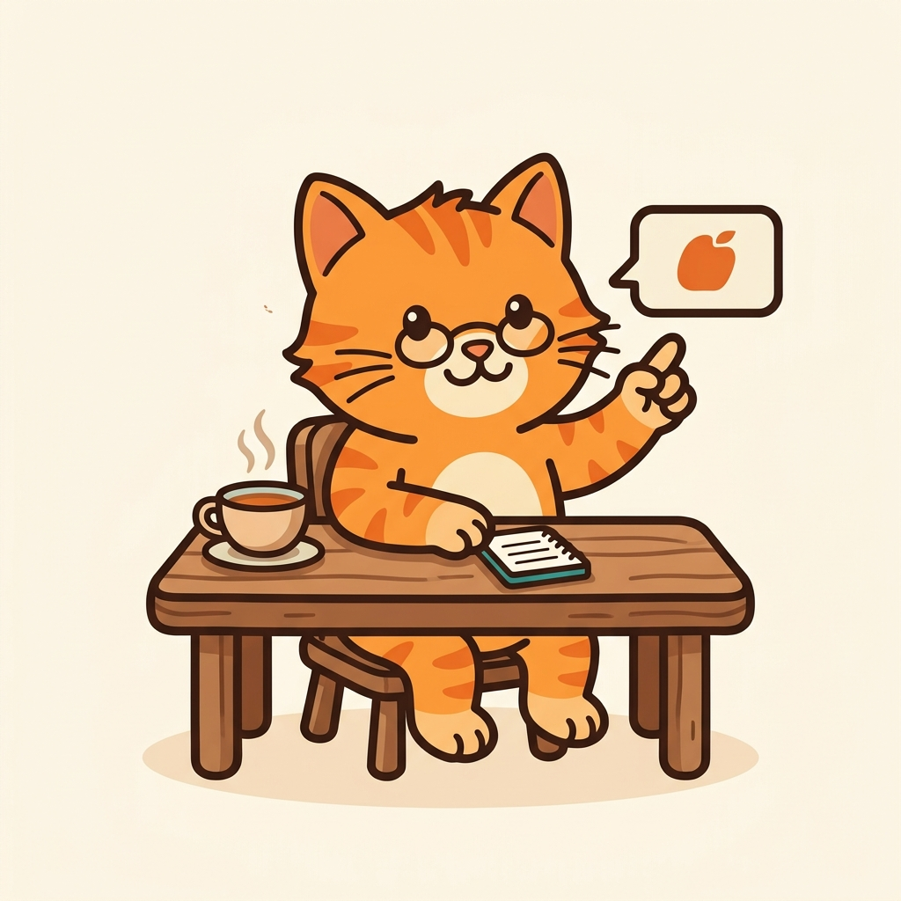
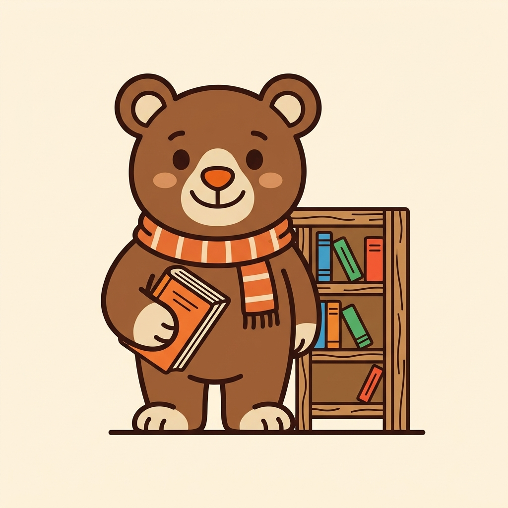

场景插画 · 在真实布局里的样子
390 × 844 · 与 App 里的实际排版一致（插画保留米色底，圆角 22，描边 #E6E1D8）
9:41
5G ▮▮▮

每天背一点，打开就能学
先定个每日计划：每天多少个新词、复习上限多少。
之后想改，设置里随时能调。
下一步
引导 · 第 1 步（SceneOnboardingWelcome）
9:41
5G ▮▮▮
词库
＋ 导入

还没有词库，先导入一个？
支持 CSV 文件，或者直接粘贴表格
导入词库
今日
词库
统计
设置
词库空态（SceneEmptyDeck）
9:41
5G ▮▮▮
生词本
0 个
还没有收藏的词
学习卡上长按单词就能收进来
今日
词库
统计
设置
生词本空态（SceneEmptyFavorites）
9:41
5G ▮▮▮
今天的词过完了
12 个词，用了 6 分 12 秒。明天见。
83%
正确率
7
连续打卡
5
剩余到期
回到今日
再复习错词
学习完成页（SceneOnboardingDone）
插画由 gemini-3.1-flash-image-preview 生成 · 米色底 #FFF9F3 · 与 20 只贴纸角色同一套描边与配色